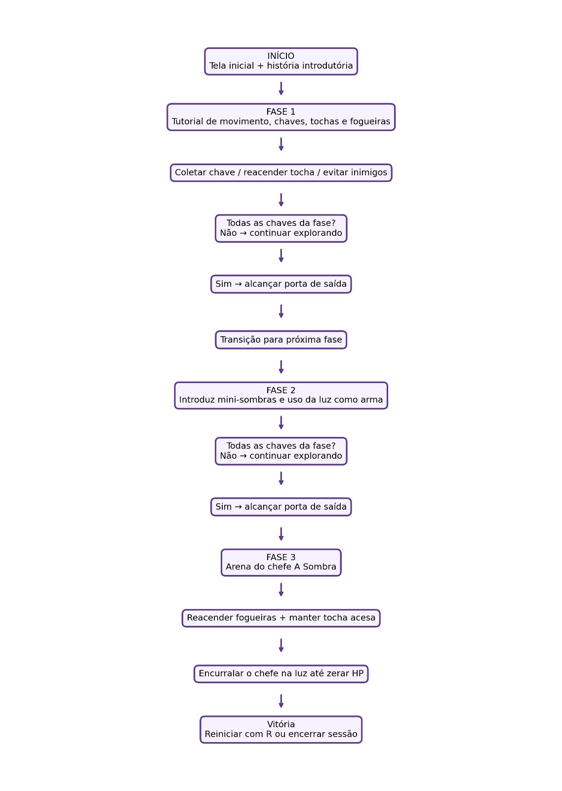
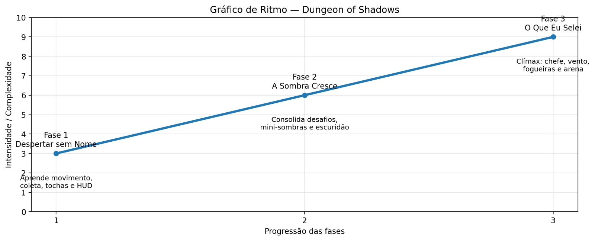

| Campo | Especificação |
|---|---|
| Título | Dungeon of Shadows |
| Gênero principal | Plataforma 2D de terror atmosférico — ação, sobrevivência e exploração labiríntica |
| Plataforma-alvo | Navegadores desktop modernos (HTML5 Canvas) — sem instalação |
| Público-alvo | 16–30 anos · fãs de mecânicas retrô, desafios rigorosos e narrativas sombrias |
| Modo de jogo | Single player |
| Objetivo macro | Navegar pela masmorra, coletar chaves, restaurar memórias, gerenciar a tocha e banir a Entidade Sombria usando a luz |
| Tecnologias core | HTML5 · CSS3 · JavaScript ES6 · Canvas 2D API · Web Audio API · zero frameworks / zero assets visuais |
| Escopo entregue | 3 fases jogáveis · HUD dinâmico · 3 classes de inimigos + chefe com IA dedicada · checkpoints · narrativa ambiental |
O jogo opera sob regras determinísticas. O jogador controla um avatar em um labirinto bidimensional com colisão por blocos. O recurso limitador e motor de tensão é a chama da tocha, que decai continuamente e reduz o campo de visão.
| Regra | Definição |
|---|---|
| Inicialização | Menu de boas-vindas → texto introdutório → Fase 1 |
| Vida | 3 corações; dano reduz 1 coração |
| Dano | Contato com inimigos ou queda em abismo → perda de 1 coração |
| Invulnerabilidade | 1200 ms (72 frames) após dano, com pisca-pisca |
| Vitória (Fases 1 e 2) | Coletar todas as chaves para abrir a porta |
| Vitória (Fase 3) | Zerar o HP do chefe |
| Derrota | HP zerado → tela de Game Over |
| Checkpoint | Queda em abismo reposiciona o jogador no último ponto seguro (safeX/safeY) |
| Decaimento da tocha | O raio luminoso diminui com o tempo; no mínimo (~40px) o jogador fica vulnerável |
| Fim do jogo | Pré-definido (3 fases) — não é infinito |

| Ação | Teclas | Efeito |
|---|---|---|
| Mover para esquerda | A / ← | Aceleração horizontal negativa; sprite invertido |
| Mover para direita | D / → | Aceleração horizontal positiva; sprite normal |
| Salto | Espaço / W / ↑ | Impulso vertical (somente se estiver no chão) |
| Reacender tocha | Contato com fogueira ou tocha de parede | Transfere a chama e aumenta o raio luminoso |
| Reiniciar nível | R (em Game Over / Vitória) | Recarrega a fase atual |
| Mudo / Som | M (toggle) | Liga/desliga todos os sons |
| Componente | Posição | Atualização |
|---|---|---|
| Corações (vida) | Superior esquerdo (20,20) | Renderiza 0 a 3 sprites conforme player.hp |
| Contador de chaves | Superior direito | Exibe "Chaves: N / Total" |
| Medidor da tocha | Abaixo do contador de chaves | Barra horizontal que encolhe conforme o combustível diminui (em todas as fases) |
| Mensagens didáticas | Centro superior | Caixas de diálogo com dicas de gameplay |
| Barra de vida do chefe | Centro inferior (Fase 3) | Barra vermelha proporcional ao HP da Sombra |
| Indicador de mudo | Superior direito | Ícone "🔇 MUDO (M)" quando o áudio está desligado |
| Item | Categoria | Efeito | Restrições |
|---|---|---|---|
| 🔑 Chave Dourada | Missão | Incrementa o contador; revela fragmento de memória | Uso imediato; não ocupa inventário |
| ❤️ Coração | Consumível | Restaura 1 coração (máx. 3) | Em locais fixos ou como recompensa de fogueira |
| 🔥 Tocha do Herói | Mecânica nativa | Emissor de luz e arma ofensiva contra sombras | Decai com o tempo; reacende em fontes de fogo |
| 🪵 Fogueira-Altar | Elemento estrutural | Acesa, cria zona de luz ampla que enfraquece inimigos | Imóvel; exige proximidade para acender |
Todos os itens usam caixas de colisão retangulares (AABB) e disparam o efeito quando interceptados pela caixa do jogador.
| Nome | Comportamento | Estados (FSM) | Função no design |
|---|---|---|---|
| 👻 Fantasma das Ruínas | Patrulha horizontal com oscilação vertical (seno) | PATRULHA / COLISÃO | Controla o ritmo em corredores estreitos |
| 🦇 Morcego Sombrio | Voo elíptico (seno/cosseno); ignora colisões com blocos | VOO_ELÍPTICO / COLISÃO | Interrompe saltos entre plataformas |
| 🌑 Mini-Sombra | Persegue no escuro; recua e sofre dano com a luz | PERSEGUIÇÃO / FUGA_LUZ / MORTE | Ensina que a luz causa dano |
| 💀 A Sombra (Chefe) | Persegue agressivamente no escuro; foge e perde HP (85) quando exposta à luz | INVESTIDA / EVASÃO_LUZ / MORTE | Clímax narrativo; exige luz + mobilidade |
| Tipo | Descrição | Efeito |
|---|---|---|
| Plataformas de pedra | Superfícies sólidas (one-way em trechos verticais) | Permitem locomoção e saltos |
| Abismos / Vazios | Zonas sem colisão no fundo do mapa | Queda → −1 coração e respawn no checkpoint |
| Portais trancados | Saída da fase; abre só com todas as chaves (ou chefe derrotado) | Barreira que valida a exploração completa |
| Tochas de parede | Fontes fixas de luz que reabastecem a tocha do herói | Facilitam a progressão em trechos escuros |
| Fogueiras (apagadas) | Podem ser acesas com a tocha; criam luz duradoura | Enfraquecem inimigos e são essenciais contra o chefe |
safeX/safeY atualizadas quando o jogador está em chão firme e longe de inimigoslocalStorage está previsto no roadmap)A busca pela luz e pela verdade revela a realidade, mas também expõe o peso das consequências do passado. O percurso de fuga é, na verdade, uma jornada de aceitação da culpa e da responsabilidade pessoal.
O despertar do guerreiro sem memórias no leito de pedra, sem saber quem é nem como chegou ali. A tocha acesa ao seu lado é o único elo com a realidade — e o primeiro passo para desvendar o mistério.

| Personagem | Descrição |
|---|---|
| 🗡️ O Guerreiro (Protagonista) | Amnésico, determinado; capuz, capa e olhar vazio. Atormentado por memórias fragmentadas, busca identidade e redenção. Valores: verdade, coragem, aceitação |
| 💀 A Sombra (Antagonista) | Entidade escura no núcleo da masmorra; materialização da culpa e do passado negado. Foge da luz e ataca nas trevas. Representa o medo e o arrependimento |
| 👻 Fantasmas / Morcegos | Habitantes-obstáculo da masmorra, sem personalidade definida — apenas instinto de ataque |
| 🌑 Mini-Sombras | Criaturas menores que ensinam o jogador a usar a luz como arma; recuam e definham na chama |
Minimalismo sombrio, alto contraste, texturas de pedra e iluminação procedural.
Claustrofóbica e opressiva, com áreas de escuridão total que geram tensão.
#000000 — escuridão#22252A — blocos#1F1235 — névoas#FF7F27 — luz da tochaÁudio em grande parte procedural via Web Audio API — nós de ganho independentes permitem modular o volume conforme a proximidade do perigo.
Justificativa de assets: a maior parte do áudio é gerada por código (zero licenciamento). O único arquivo externo é ghost.mp3 ("ghostly voices" por ERH — CC BY 3.0), usado no sussurro espacial por aproximação à proposta de horror.
| Fase | Inimigos | Obstáculos | Power-Ups | Mecânicas aprendidas | Narrativa |
|---|---|---|---|---|---|
| Fase 1 | Fantasmas, morcegos | Abismos estreitos, plataformas fixas | Chaves, corações, tochas de parede | Movimento, salto, coletar chaves, reacender tocha | Despertar, primeiros fragmentos |
| Fase 2 | Fantasmas, morcegos, mini-sombras | Trechos escuros, plataformas móveis | Chaves, corações, fogueiras | Luz ofensiva contra sombras; gestão de combustível | Conflito interno, revelações |
| Fase 3 | A Sombra (chefe), morcegos | Arena fechada, vento apaga fogueiras | Fogueiras (essenciais) | Combate estratégico, priorizar acendimento | Clímax: aceitação da própria sombra |
| Categoria | Especificação |
|---|---|
| Ambiente de desenvolvimento | VS Code, Git/GitHub, documentação visual |
| Motor gráfico | Canvas 2D API nativa (sem bibliotecas externas) |
| Pipeline de iluminação | createRadialGradient + destination-out para máscaras de luz |
| Áudio | Web Audio API com nós de ganho, filtros e compressor |
| Organização de código | POO em classes (Player, Enemy, Campfire, Boss, SoundManager) |
| Padrões | Código em inglês; comentários e documentação em português |
| Arquivos | Jogo em index.html único; áudio em assets/sounds/ |
| Obra | Contribuição |
|---|---|
| Hollow Knight | Ambientação subterrânea sombria, estética melancólica, feedback sonoro preciso |
| Limbo | Silhuetas e iluminação de alto contraste para tensão |
| Don't Starve | Escuridão como ameaça ativa que exige gerenciamento de combustível |
| Celeste | Curva de aceleração responsiva em saltos, minimizando frustração |
| Áudio | "ghostly voices" por ERH (freesound.org/people/ERH/sounds/36757) — CC BY 3.0 |
O High Concept do jogo acompanha este GDD como documento complementar.
localStorage por fase concluídaDungeon of Shadows — GDD Versão Final · SATC · Desenvolvimento de Jogos · 2026